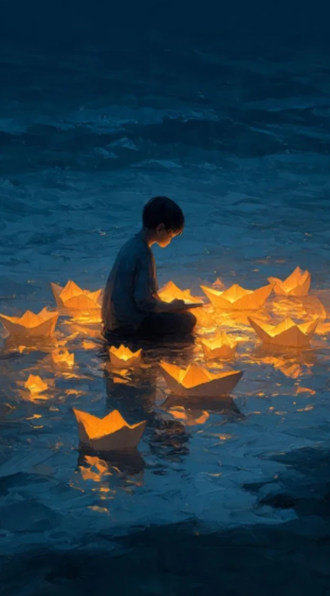
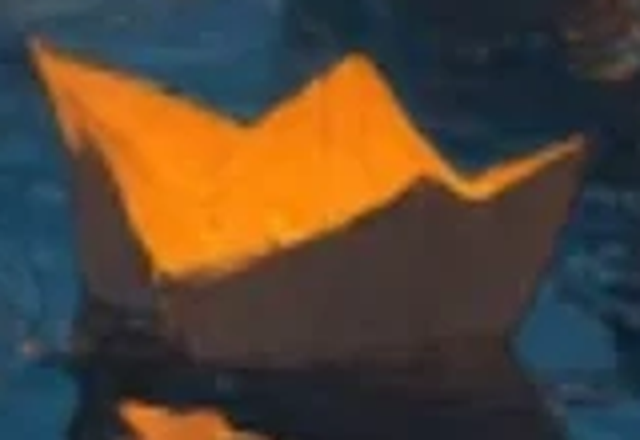
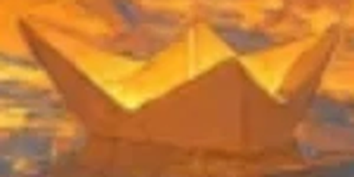

The first step before any layout. We look closely at the boats in the reference, build one geometric model of the boat, then explore styles, lighting, angles and motion, all drawn in code from that same model.
All six recommendations were adopted (marked). Round two applies them in the 3D lab (section 03) and the guide boat (section 04b). The rest of the page is round one, kept as evidence.
The guide boat, icons and favicon
Two boats from the reference image, upscaled 4×, with pins on their landmarks. Pin positions are approximate, read by eye from soft painted edges.



A classic boat folded from a 2:1 sheet, reduced to 17 vertices. Every image below is rendered from these points, so a change here updates everything.
The chosen direction. Panels now bow slightly between sharp folds, and the folds catch a thin rim of light. Turn Lit off and hover the boat to Ignite it. Depth runs the lighting from candle at the surface to underwater.
Same model, same angle, different rendering language. Each one suits a different job on the site.
The ember line, refined for its job: it draws itself on when the page opens, then rides down the page with you as the water deepens.
The page descends from the surface to the underwater city, so the boat has to hold up in every light along the way.
From broadside to bow-on, and from eye level to looking down. Pins stay on so you can check that the geometry holds.
Live and re-projected every frame from the 3D model. Motion stays slow and physical, never bouncy.
For the favicon, nav mark, list bullets and the boat that guides you down the page.
The shortlist after digging past the obvious choices, picked for this specific look.
The lab above. Full control of paper translucency, flicker and water. About 150 KB gzipped. Its bundled addons give bloom (UnrealBloom) and a reflector for real mirrored water.
If the site stays React, R3F wraps three.js declaratively. drei's MeshReflectorMaterial gives blurred, distorted floor reflections, which suit streaky water. @react-three/postprocessing covers bloom.
Patricio Gonzalez Vivo's shader library: noise, fbm, voronoi and lighting functions to #include. Saves writing water noise from scratch.
Tiny, ready-made WebGL backgrounds (mesh gradient, grain, ripple). Good for the calm sections between hero and closing. Check the licence first: it reads as PolyForm Shield now.
Now free under MIT. Ties the descent (surface to underwater) to scroll position, and drives the "guide boat" along a path.
Optional. If we want a hand-modelled, cloth-simulated boat with real paper crumple, model it in Blender and export glTF. The shader above still applies. Worth it only if the 17-vertex version feels too clean.
For 2D interactive pieces with state machines, like a boat icon that "lights up" on hover. Lighter than WebGL for UI-scale motion.
A visual timeline editor for three.js scenes. Useful for choreographing the hero (camera drift, boats arriving) by hand rather than in code.